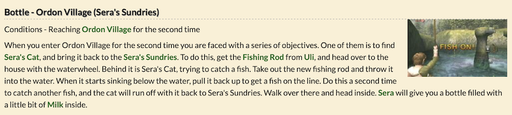
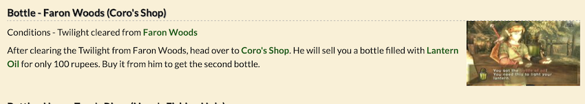
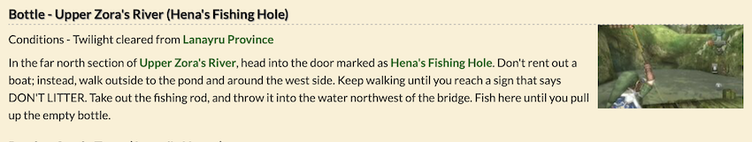
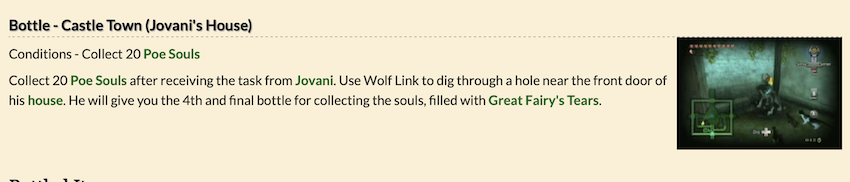

Piece of Heart #1 - Faron Province; Faron Woods
Piece of Heart #2 - First dungeon; Forest Temple
Piece of Heart #3 - First dungeon; Forest Temple
Piece of Heart #4 - Faron Province; Hyrule Field (South)
Piece of Heart #5 - Eldin Province; Hyrule Field (Kakariko Gorge)
Piece of Heart #6 - Ordona Province; Ordon Village (Ranch)
Piece of Heart #7 - Second dungeon; Goron Mines
Piece of Heart #8 - Second dungeon; Goron Mines
Piece of Heart #9 - Eldin Province; Kakariko Village
Piece of Heart #10 - Eldin Province; Kakariko Village
Piece of Heart #11 - Eldin Province; Kakariko Village
Piece of Heart #12 - Eldin Province; Death Mountain (Trail)
Piece of Heart #13 - Eldin Province; Hyrule Field (Bridge of Eldin)
Piece of Heart #14 - Eldin Province; Hyrule Field (Kakariko Gorge; Lantern Cavern #1)
Piece of Heart #15 - Lanayru Province; Lake Hylia
Piece of Heart #16 - Lanayru Province; Lake Hylia (Lantern Cavern #2)
Piece of Heart #17 - Lanayru Province; Fishing Hole
Piece of Heart #18 - Lanayru Province; Castle Town
Piece of Heart #19 - Third dungeon; Lakebed Temple
Piece of Heart #20 - Third dungeon; Lakebed Temple
Piece of Heart #21 - Faron Province; Sacred Grove
Piece of Heart #22 - Eldin Province; Hyrule Field (Bridge of Eldin)
Piece of Heart #23 - Lanayru Province; Lake Hylia (Lanayru Spring)
Piece of Heart #24 - Lanayru Province; Lake Hylia
Piece of Heart #25 - Eldin Province; Hyrule Field (Bridge of Eldin; Lava Cavern)
Piece of Heart #26 - Desert Province; Arbiter's Grounds (Exterior)
Piece of Heart #27 - Fourth dungeon; Arbiter's Grounds
Piece of Heart #28 - Fourth dungeon; Arbiter's Grounds
Piece of Heart #29 - Eldin Province; Hyrule Field (Bridge of Eldin)
Piece of Heart #30 - Lanayru Province; Hyrule Field (East Gate)/Hyrule Field (North) Path
Piece of Heart #31 - Fifth dungeon; Snowpeak Ruins
Piece of Heart #32 - Fifth dungeon; Snowpeak Ruins
Piece of Heart #33 - Peak Province; Snowpeak (Snowboard area)
Piece of Heart #34 - Lanayru Province; Hyrule Field (North)
Piece of Heart #35 - Sixth dungeon; Temple of Time
Piece of Heart #36 - Sixth dungeon; Temple of Time
Piece of Heart #37 - Faron Province; Sacred Grove
Piece of Heart #38 - Eldin Province; Hidden Village
Piece of Heart #39 - Faron Province; Faron Woods
Piece of Heart #40 - Eldin Province; Hyrule Field (Bridge of Eldin)
Piece of Heart #41 - Seventh dungeon; City in the Sky
Piece of Heart #42 - Seventh dungeon; City in the Sky
Piece of Heart #43 - Eldin Province; Hyrule Field (Kakariko Gorge)
Piece of Heart #44 - Eighth dungeon; Palace of Twilight
Piece of Heart #45 - Eighth dungeon; Palace of Twilight




ANTS: KAKARIKO VILLAGE
♂ – At the back of Kakariko Graveyard, crawling around the roots of the tree on the right.
♀ – In the empty house next to Barnes’s Bomb Shop on the western side of town. Enter the front door and she should be crawling around on the floor.
BEETLES: SOUTHERN HYRULE FIELD
♂ – He’s in the center of the field. Look near the tree in between the hills in the middle of Faron Province.
♀ – You’ll find her clinging to the side of a tree on a ridge in the same area. Look in the far west of Hyrule Field at night. It’s very hard to see her during the day.
BUTTERFLIES: EASTERN HYRULE FIELD
♂ – Head south from the eastern entrance to Castle Town. He’s to the left of the path in a flower patch.
♀ – Head northeast from the eastern entrance to Castle Town. On your left, you’ll see a ledge covered in ivy. Use the Clawshot to get to the top, and you’ll find her in a flower patch.
DAYFLIES: GERUDO VALLEY
♂ – He’s at the central, southernmost point of the desert just south of the rift located there. Look for him at night because if you don’t, it will be almost impossible to spot him flying around.
♀ – You’ll find her in the southern section of the desert just west of the warp portal. Look around inside both of the two trenches because she may move back and forth. As with the male Dayfly, you should probably hunt for her at night.
DRAGONFLIES: ZORA’S RIVER
♂ – He’s in the very tall, hilly area right below the Zora’s Domain waterfall. Climb the hills on the west side near Mother and Child Rock, and you’ll find him.
♀ – You can find her flying over the river in front of Iza’s boat rental store. Use the Gale Boomerang to catch her if you have trouble.
GRASSHOPPERS: WESTERN HYRULE FIELD
♂ – If you exit Kakariko to the northeast, you’ll find him in the central, southern part of Western Hyrule Field. He’ll be jumping around in the brown grass-less patch of land to the east of the wall. He’s hard to catch, so use the Gale Boomerang or Clawshot to get a hold of him.
♀ – She’s up in the far northeast corner of Western Hyrule Field. Even though she’s just hopping around, she may be difficult to catch so use the Gale Boomerang or Clawshot to reel her in.
LADYBUGS: SOUTHERN HYRULE FIELD
♂ – Leave Castle Town via the south steps and head to the west once off the steps. From there, you’ll see a large rock. Look near the flowers at the base and you’ll find the male ladybug.
♀ – Immediately south of Castle Town there will be a courtyard with a pool inside of it. On the east side of the pool there are three trees. The female ladybug will be either inside one of the trees or flying around them.
MANTISES: LAKE HYLIA BRIDGE
♂ – You can find him flying around inside the northern arch at the Great Bridge over Lake Hylia. He’s hard to see and harder still to catch. Use the Gale Boomerang or Clawshot to help bring him down.
♀ – Head to the southern end of the Great Bridge over Lake Hylia, and travel to the large collection of old trees before the small bridge. She’s on the south eastern part of the wall. Look up and you’ll see her. Use the Gale Boomerang or another weapon to bring her down.
PHASMIDS: BRIDGE OF ELDIN
♂ – He’s on the southern arch of the Bridge of Eldin. He’s not hard to find, and you can use the Gale Boomerang or Clawshot to get him down.
♀ – You’ll find her on the northern side of the Bridge of Eldin. Use the Clawshot to get onto the northwestern rock ledges and grab the bug from there.
PILL BUGS: KAKARIKO GORGE
♂ – Go to the bridge in Kakariko Gorge, and look on the ground to the immediate southeast. He will be crawling along right after the bridge and right next to the trail.
♀ – Enter Kakariko Gorge from Kakariko Village and take a right. Follow the wall of rocks you meet and you will end up at a patch of flowers near a few trees. Look around the flowers, and you’ll find her. You might have to cut down the flowers to see her.
SNAILS: SACRED GROVE
♂ – Go to the room with the guardian statue puzzle. In the southwest corner of this room, you’ll find an alcove. Go inside and look up at the northeast corner from the inside. You will see him crawling around on the wall.
♀ – You’ll find her inside the entrance to the Temple of Time. In the area before you officially enter the dungeon there is a large staircase along the southern wall of the room. Look along the western side of the staircase, and you’ll find her.
STAG BEETLES: NORTHERN HYRULE FIELD
♂ – On the eastern side of the small river, there is a single tree. Look around it and in its branches, and you’ll find the male Stag Beetle.
♀ – If you look north of the small river, you’ll find a large rocky area with a split path. Follow the south portion of this path and stop when you reach the large boulder blocking the entrance to a cave. Look up and to the right of the boulder and you’ll find the bug.